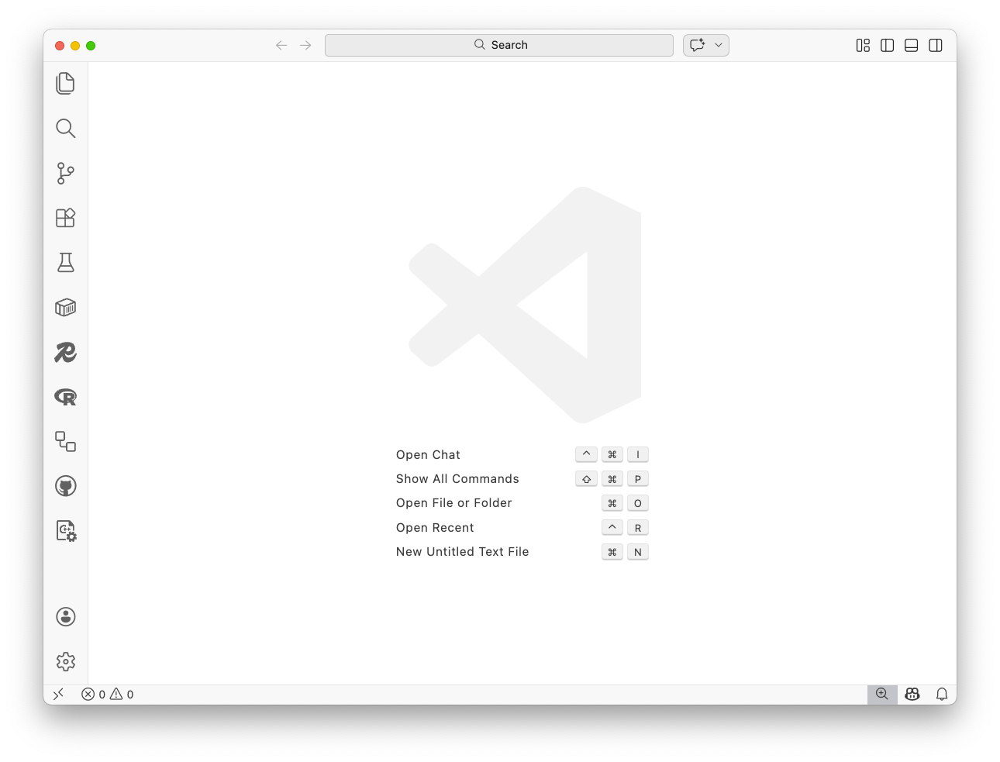
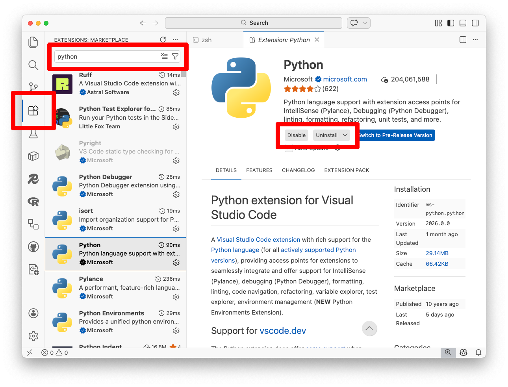
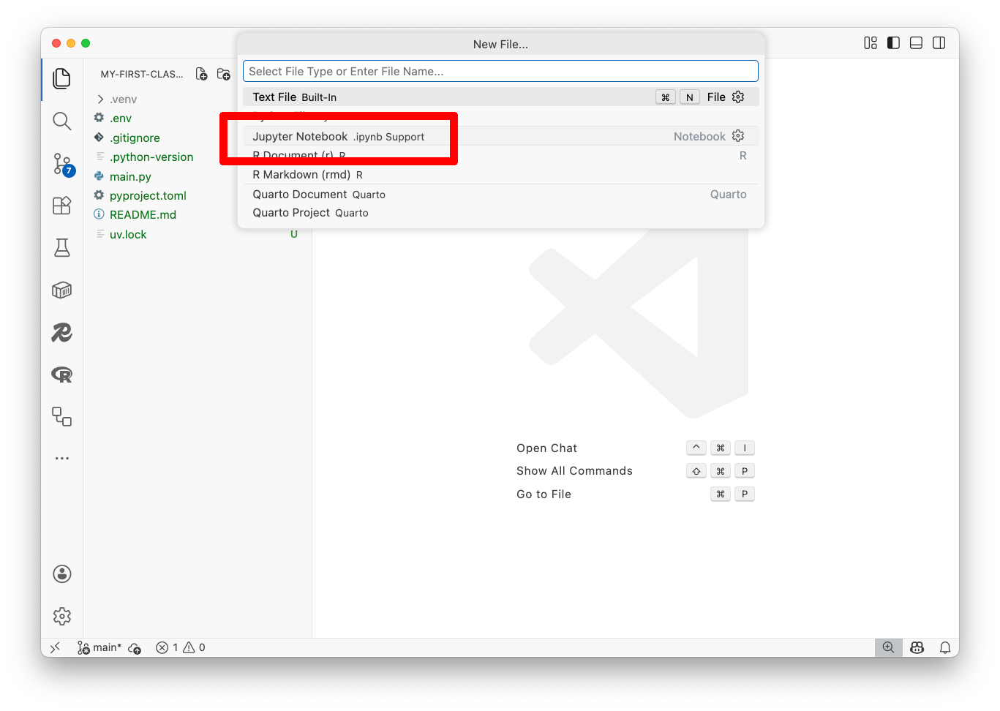
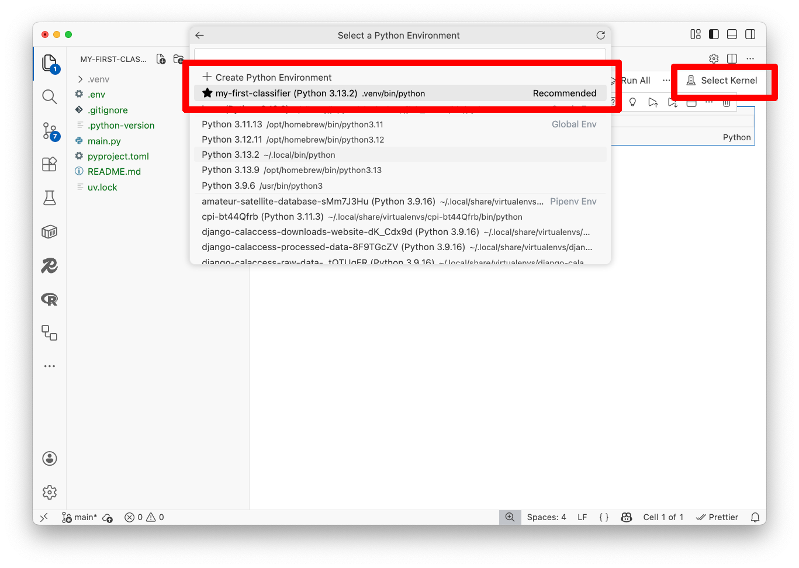
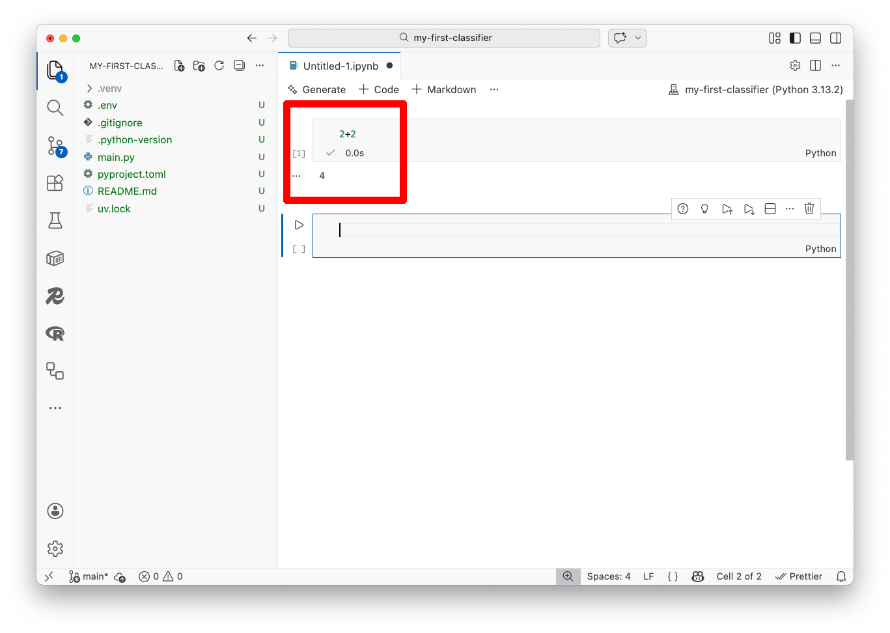

3. Visual Studio Code¶
This class will show you how to interact with a large-language model on Hugging Face using the Python computer programming language.
You can write Python code in your terminal, in a text file and any number of other places. If you’re a skilled programmer who already has a preferred venue for coding, feel free to use it as you work through this class.
If you’re not, the tool we recommend for beginners is Visual Studio Code, a free code editor supported by Microsoft.
It can be used to run Jupyter notebooks — the interactive coding environment invented by Python developers and used by scientists, scholars, investors and corporations to create and share their research. It is also commonly used by journalists to analyze data and show their work.
3.1. Install Visual Studio Code¶
Visual Studio Code can be installed on any operating system with a simple point-and-click interface. If you don’t have it already, the first step is to visit code.visualstudio.com and download the version tailored for your operating system.
Once you have it installed, you should open an empty window to start our project. It should look something like this:

3.2. Install the Python extension¶
Now you need to install the Python extension, which gives Visual Studio Code the ability to run Python code and notebooks. Click the Extensions icon in the left sidebar — it looks like four small squares. Type “Python” into the search bar. The top result should be the Python extension published by Microsoft. Click the blue “Install” button.

3.3. Install uv¶
We recommend using uv, a free tool that makes it easy to install and manage Python versions and project dependencies.
Select the “Terminal” menu at the top of Visual Studio Code and click “New Terminal.” A terminal will open at the bottom of the screen. Install uv by running:
curl -LsSf https://astral.sh/uv/install.sh | sh
Close your terminal and open a new one for the changes to take effect. Verify it’s installed by running:
uv --version
You should see a version number like uv 0.10.7 or similar.
3.4. Create a Python project¶
Now let’s create a project folder for your work. Let’s start by creating a folder called my-first-classifier.
mkdir my-first-classifier
And then navigating into it:
cd my-first-classifier
Initialize a new Python project with uv:
uv init
This creates a virtual environment and project configuration files. Now install ipykernel, a Python library that allows Visual Studio Code to run Jupyter notebooks:
uv add ipykernel
Verify Python is working by running:
uv run python --version
If you see Python 3.13 or something similar, you’re all set.
3.5. Open your first notebook¶
In Visual Studio Code, click “File” in the menu bar and select “Open Folder…” from the dropdown. Navigate to the my-first-classifier folder you just created and open it.
It will now have access to your project’s virtual environment, which includes Python and all the packages you installed.
Click “File” in the menu bar and select “New File…” from the dropdown. When prompted to choose a file type, select “Jupyter Notebook.”

Visual Studio Code will open a fresh notebook. You will see a prompt in the upper right corner asking you to select a Python kernel. Click “Select Kernel.”
A popup will appear. Select “Python Environments…” and then choose the .venv option — this is the virtual environment you created with uv.

Welcome to your first notebook. Let’s make sure everything is working.
Click on the first cell, type the following and hit the play button to the left of the cell, or press Shift+Enter:
2+2
You should see the number 4 appear below the cell.

If so, congratulations. You’re all set up and ready to move on to writing code.